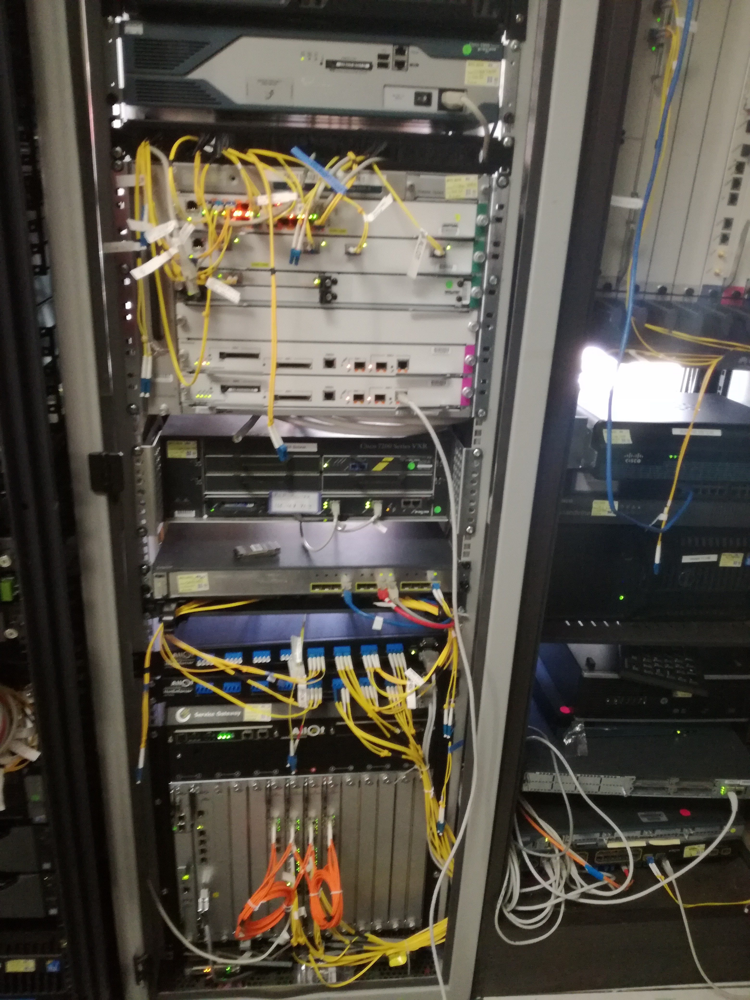
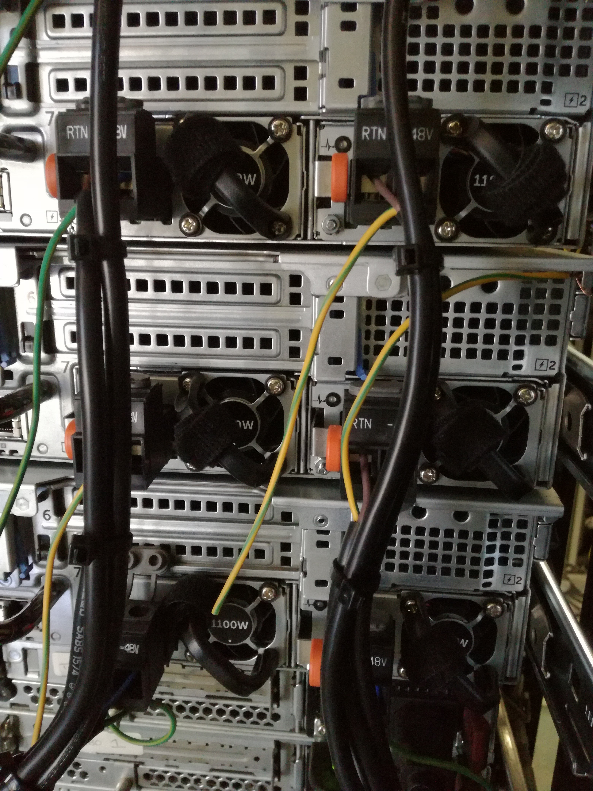

Core Services
- ICT strategy Development
- Network Design and Implementation
- Managed Service
- Security Management
- Project Management
- Software Licensing


Evaluate current ICT Infrastructure to identify gaps and come up with solutions
Creating tailored network solutions and overseeing their deployment
At Ruridata Technologies (PTY) LTD, our dedication to client satisfaction goes beyond the initial deployment of solutions.